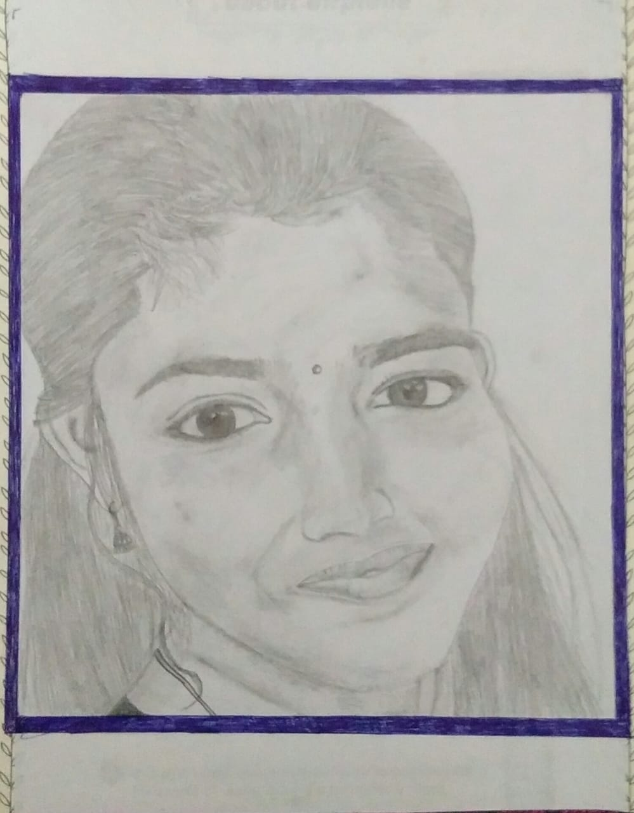
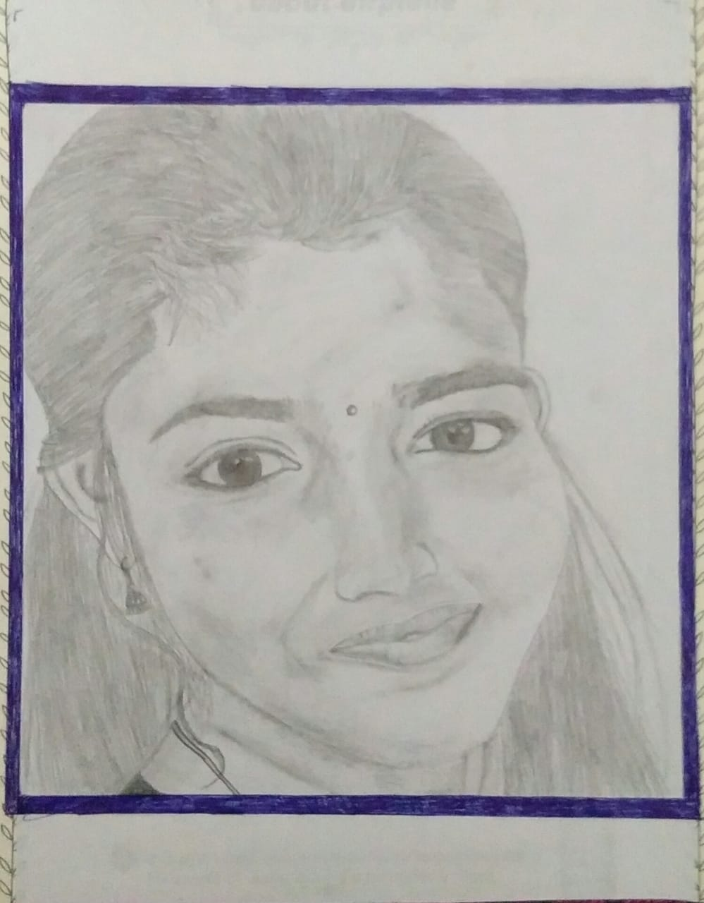

Love to
- "Travel"
- "Drawing"
- "Ride"
- "Code"

Love to
Hi,my full name is Sreelakshmi P M.I was named in memory of my grandmother " Kunji Lakshmi ". I am a Btech Computer Science and Engineering student in MA College of Engineering, kothamangalam.I chose this department to learn more about technology.I want to know more and more about coding,web development, android studio and ethical hacking mainly. My motherplace is Chembrasseri, Malappuram.Daughter of Mukundan and Indira Devi.I have two brothers, they are also my birth buddies, Prashob and Praveen.Cats are my favourite.Loves to play with them. They are really cute babies.I have a big dream of travelling all over the world in Bullet,especially to places full of snow and flowers.Because i love both of them.And I also like to do adventurous things like mountaining,trekking,byngee jumping,scuba diving,rafting,caving, rock climbing etc.The most confident of my abilities is drawing.I belive that i can create miracles with a pencil.All my drawings are with pecils.
First of all I want to be a good human
I praticed classical music for six years and classical dance for about seven and half years.But i didn't recognize my birt ability till Btech second semester.For my best friend's birthday,i just tried to draw her face with a pencil.It was a great successfull.i was realizing that i had a great abilility in drawing..So i started pencil drawing.Now i am very confident about my drawings.I am good in python and c programming languages.I practiced android studio also.

 


This is my first project.I hope this turns out to be a good start to Web Development. I am happy whether it succeds or fails, because i belive in the words "FAILURE is the way to SUCCESS ".